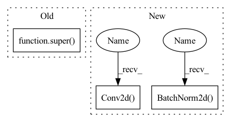

Pattern ID :2007
Before Change
class ResNet(nn.Module):
def __init__(self) -> None:
super( ResNet, self) .__init__()
self.backbone = resnet.resnet18()
def forward(self, x):After Change
self.in_channels = 64
self.conv1 = nn.Sequential(
nn.Conv2d( 3, 64, kernel_size=3, padding=1, bias=False) ,
nn.BatchNorm2d( 64) ,
nn.ReLU(inplace=True))
//we use a different inputsize than the original paper
//so conv2_x"s stride is 1In pattern: SUPERPATTERN
Frequency: 4
Non-data size: 3
Instances Fragment ID: 4942607
Project Name: shaoeric/torch-atom
Commit Name: 87af6f2da4a9d8d8cd3710b0c643085ab8abbec6
Time: 2022-03-06
Author: shaoeric@foxmail.com
File Name: src/models/resnet.py
M Class Name: ResNet
N Class Name: ResNet
M Method Name: __init__(4)
N Method Name: __init__(1)
M Parent Class: nn.Module
N Parent Class: nn.Module
M File Name: src/models/resnet.py
N File Name: src/models/resnet.py
M Start Line: 11
M End Line: 13
N Start Line: 82
N End Line: 98
Before Change
Cross-Domain Instance Matching. arXiv:1711.08106.
def __init__(self, num_classes=0, loss={"xent"}, **kwargs):
super( ResNet50M, self) .__init__()
self.loss = loss
resnet50 = torchvision.models.resnet50(pretrained=True)
base = nn.Sequential(*list(resnet50.children())[:-2])After Change
self.feature_dim = 512 * block.expansion
// backbone network
self.conv1 = nn.Conv2d( 3, 64, kernel_size=7, stride=2, padding=3, bias=False)
self.bn1 = nn.BatchNorm2d( 64)
self.relu = nn.ReLU(inplace=True)
self.maxpool = nn.MaxPool2d(kernel_size=3, stride=2, padding=1)
self.layer1 = self._make_layer(block, 64, layers[0])
self.layer2 = self._make_layer(block, 128, layers[1], stride=2) Fragment ID: 4942618
Project Name: vlsomers/bpbreid
Commit Name: 710b9ac1a28d418bddc41aeeda320ab4de4d17fe
Time: 2018-10-26
Author: k.zhou@qmul.ac.uk
File Name: torchreid/models/resnet.py
M Class Name: ResNet50M
N Class Name: ResNet
M Method Name: __init__(7)
N Method Name: __init__(3)
M Parent Class: nn.Module
N Parent Class: nn.Module
M File Name: torchreid/models/resnet.py
N File Name: torchreid/models/resnet.py
M Start Line: 71
M End Line: 84
N Start Line: 107
N End Line: 130
Before Change
class DenseBlock(nn.Module):
def __init__(self, num_convs, in_channel, out_channel):
super() .__init__()
layers = []
for i in range(num_convs):
layers.append(convBlock(out_channel*i + in_channel, out_channel))After Change
class Transition(nn.Module):
def __init__(self, nChannels, nOutChannels):
super(Transition, self).__init__()
self.bn1 = nn.BatchNorm2d( nChannels)
self.conv1 = nn.Conv2d( nChannels, nOutChannels, kernel_size=1,
bias=False)
def forward(self, x):
out = self.conv1(F.relu(self.bn1(x)))
out = F.avg_pool2d(out, 2) Fragment ID: 4942605
Project Name: mayurji/image-classification-pytorch
Commit Name: 6fcaecfed9a197dd8cf6a73345e5396e57eba654
Time: 2021-07-31
Author: mayur87545@gmail.com
File Name: DenseNet.py
M Class Name: DenseBlock
N Class Name: Transition
M Method Name: __init__(3)
N Method Name: __init__(4)
M Parent Class: nn.Module
N Parent Class: nn.Module
M File Name: DenseNet.py
N File Name: DenseNet.py
M Start Line: 33
M End Line: 38
N Start Line: 57
N End Line: 60
Before Change
dilation: int = 1,
norm_layer: Optional[Callable[..., nn.Module]] = None
) -> None:
super( Bottleneck, self) .__init__()
if norm_layer is None:
norm_layer = nn.BatchNorm2d
width = int(planes * (base_width / 64.)) * groupsAfter Change
super().__init__()
width_ratio = out_channels / (widen_factor * 64.)
D = cardinality * int(base_width * width_ratio)
self.conv_reduce = nn.Conv2d(
in_channels, D, kernel_size=1, stride=1, padding=0, bias=False)
self.bn_reduce = nn.BatchNorm2d(D, momentum=0.001)
self.conv_conv = nn.Conv2d(D, D,
kernel_size=3, stride=stride, padding=1,
groups=cardinality, bias=False)
self.bn = nn.BatchNorm2d(D, momentum=0.001)
self.act = mish
self.conv_expand = nn.Conv2d(
D, out_channels, kernel_size=1, stride=1, padding=0, bias=False)
self.bn_expand = nn.BatchNorm2d(out_channels, momentum=0.001)
self.shortcut = nn.Sequential()
if in_channels != out_channels:
self.shortcut.add_module("shortcut_conv",
nn.Conv2d(in_channels, out_channels,
kernel_size=1,
stride=stride,
padding=0,
bias=False))
self.shortcut.add_module(
"shortcut_bn", nn.BatchNorm2d( out_channels, momentum=0.001) )
def forward(self, x):
bottleneck = self.conv_reduce.forward(x) Fragment ID: 4942627
Project Name: ygzwqzd/lamda-ssl
Commit Name: 360768e49da2ff10157493a976817acc85f1ccd5
Time: 2022-01-17
Author: 1129198222@qq.com
File Name: Semi_sklearn/Network/ResNet.py
M Class Name: Bottleneck
N Class Name: ResNeXtBottleneck
M Method Name: __init__(7)
N Method Name: __init__(9)
M Parent Class: nn.Module
N Parent Class: nn.Module
M File Name: Semi_sklearn/Network/ResNet.py
N File Name: Semi_sklearn/Network/ResNet.py
M Start Line: 76
M End Line: 99
N Start Line: 31
N End Line: 68